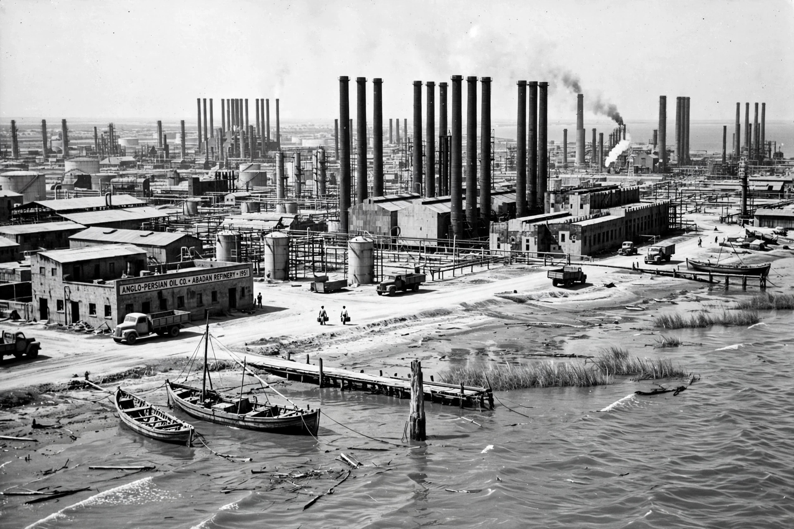

Abadan Crisis

| Date | 1951–1954 |
|---|---|
| Location | Abadan, Iran |
| Cause | Nationalisation of the Anglo-Iranian Oil Company |
| Outcome | 1953 Iranian coup d'état; consortium agreement |
The Abadan Crisis was a major event in Iranian history following the nationalisation in 1951 of the British-owned Anglo-Iranian Oil Company (AIOC) under Prime Minister Mohammad Mosaddegh. Named after Abadan, the city in Khuzestan province that hosted the world's largest oil refinery at the time, the crisis saw Britain impose an embargo on Iranian oil, withdraw technicians, and blockade exports, precipitating an economic and diplomatic confrontation that ended with the 1953 coup that overthrew Mosaddegh.
Background
Under the 1933 agreement, Iran received only a small share of oil revenues while the AIOC — majority-owned by the British government — controlled production. Growing nationalist resentment led the Majlis to vote for nationalisation in March 1951, and Mosaddegh became prime minister determined to enforce it.
The crisis
Britain appealed to the International Court of Justice and the UN Security Council, withdrew its staff from Abadan in October 1951, and organised a worldwide boycott of Iranian oil backed by a Royal Navy presence in the Persian Gulf. Iran's economy suffered badly, but Mosaddegh refused to concede. The dispute became a Cold War flashpoint: the United States, initially sympathetic, came to fear communist influence through the Tudeh Party, and in August 1953 the CIA and MI6 organised Operation Ajax, restoring Mohammad Reza Pahlavi to full power.
Aftermath
In 1954 a consortium of Western oil companies took over Iranian production, with the National Iranian Oil Company nominally in control. The crisis remains a symbol of resistance to foreign domination in Iranian political memory and a landmark in the history of resource nationalism.